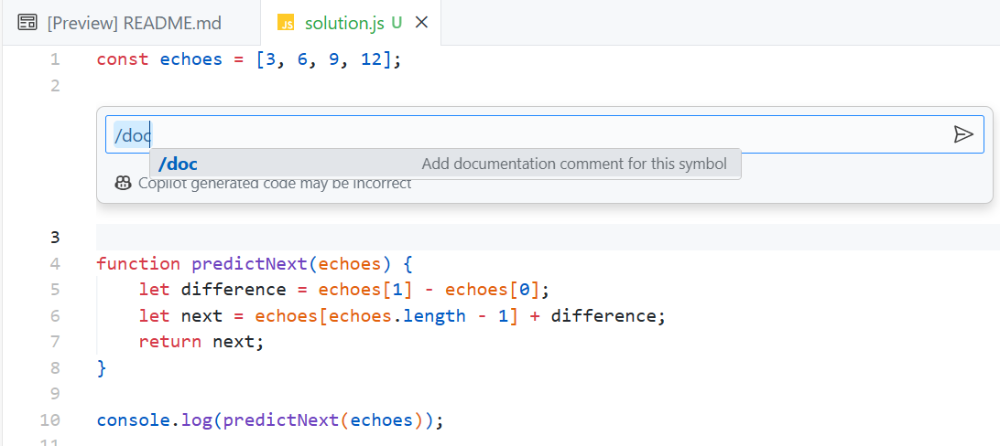

Warmup Adventure
GitHub Copilot Warmup Adventure

GitHub Copilot is an AI pair programmer that helps you write better code. In this warm up adventure you'll get to know Copilot and try it out for yourself. Here are a few things you can do with GitHub Copilot:
- Convert comments into code. Need to make an HTTP call, filter an array, or perform another task? Write a comment and Copilot will convert it into code for you.
- Create a UI. Use pure HTML/CSS/JavaScript or a library/framework of your choosing.
- Create SQL queries.
- Create unit tests.
- Write code in a new language.
- Explain code you're working on.
- And more!
If you're brand new to GitHub Copilot check out this video to learn more about the benefits it can bring to your development workflow. Once you've watched the video, come back here and choose an adventure to get started.

Getting Started: Installing the GitHub Copilot Extension
Follow the steps below to install the GitHub Copilot extension in Visual Studio or Visual Studio Code.
-
Install Visual Studio or Visual Studio Code if you don't have it already.
-
Install GitHub Copilot by following the steps at https://docs.github.com/en/copilot/getting-started-with-github-copilot.
What If I Don't Have a GitHub Copilot License?
Are you a student? Learn more about how to setup and access GitHub Copilot here.
If you don't currently have a GitHub Copilot license, you can:
Your First Adventure: The Chamber of Echoes
Let's get started with your first adventure!

Background:
Perched atop the highest hill, overlooking the kingdom, stands the majestic Echo Castle. Within its stone walls is a chamber known as the Echo Room. This chamber, unlike any other, has the mystic power to echo numbers to anyone who enters. However, the Echo Room doesn't just echo back any numbers; it always echoes the next number in a sequence.
Legends tell of a wizard who enchanted this chamber to test the intellect of visitors. The room would echo numbers in sequence, and only those who could predict the next echo were deemed worthy of the castle's hidden treasures.
Objective:
Your task is to enter the Echo Room and listen to its sequence, then predict the next number it will echo. You have been provided with a series of numbers the room has echoed in the past. Use these numbers to determine the next one in the sequence.
Specifications:
-
Input:
- A list of at least three numbers that form a sequence. This list represents the numbers the room has echoed in the past.
-
Output:
- A single number representing the next number in the sequence.
-
Assumptions:
- The sequence will always be an arithmetic progression (The difference between consecutive numbers is constant).
Sample Data:
Consider the sequence: [3, 6, 9, 12]
The next number echoed by the room should be: 15
Constraints:
- The following solution uses JavaScript and Node.js, but you can use Copilot to write the code in another language if you'd like.
Summary of High-Level Tasks to Perform:
- Use a console application to render the output.
- Create a constant to hold the provided number sequence.
- Determine the common difference between consecutive numbers.
- Predict the next number in the sequence using the identified pattern.
GitHub Copilot Steps
This solution uses JavaScript and Node.js. Feel free to use another language/framework if you'd like.
-
Create a file named
echo-chamber.jsin a folder of your choosing. -
Add a
constnamedechoesto hold the numeric sequence into the file:js const echoes = [3, 6, 9, 12]; -
Type the following code after the
echoesconstant. Copilot should suggest code to help you determine the difference between consecutive numbers in the sequence.js function predictNext(echoes) { -
To accept the suggestion, press Tab. The following function body should be added. Note that you may see a different code suggestion.
js function predictNext(echoes) { let difference = echoes[1] - echoes[0]; let next = echoes[echoes.length - 1] + difference; return next; } -
Enter a new line after the function and Copilot should suggest code similar to the following. If it doesn't, begin typing
console.log. To accept the suggestion, press Tab.js console.log(predictNext(echoes)); -
Move your cursor above the
predictNextfunction and select CTRL + i (Windows) or CMD + i (Mac). -
Enter
/docinto the textbox that appears and press Enter. You should see a comment generated for the function.
-
Select
Acceptto accept the suggestion. -
You should see that a comment is generated for the function.
NOTE: In addition to generating documentation, you can also use comments to generate code.
-
Now let's assume that you want to store the "memories" of the previous numbers echoed by the room. Add the following code after the
echoesvariable.js const memories = []; -
Add the following comment immediately above the
return nextstatement in thepredictNextfunction and press Enter. Accept the suggestion by pressing Tab.js // Store the full sequence including the predicted number in memories -
You should see code similar to the following generated:
js memories.push(...echoes, next); -
Save
echo-chamber.jsand open a terminal window in the folder where you created the file. -
Run the following command to execute the code. This assumes you have Node.js installed.
bash node echo-chamber.js -
You should see
15printed to the console which is the next number in the sequence. -
See if you can get Copilot to output the memories to the console for you by adding a comment.
Echo Castle's Hidden Treasure is Now Yours!

You've completed your first GitHub Copilot "warmup" adventure! Check out the other adventures located in the Adventures folder to see other ways GitHub Copilot can be used.